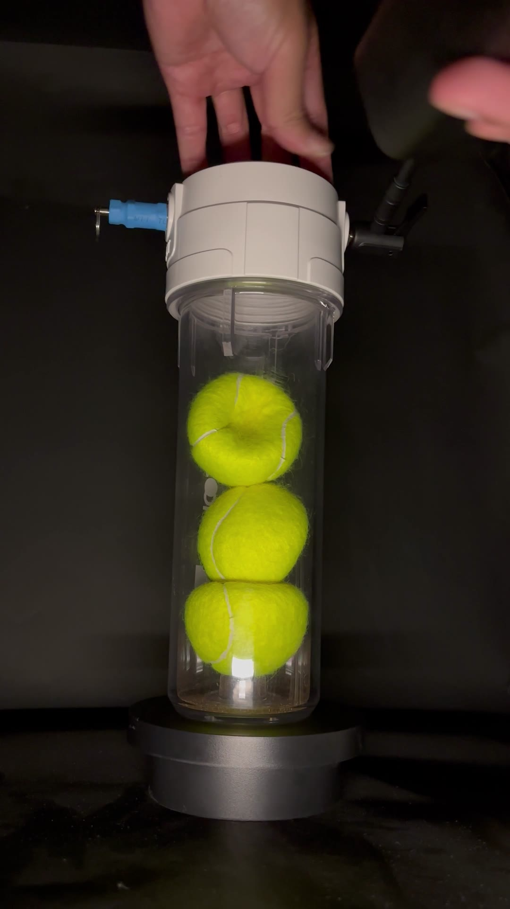
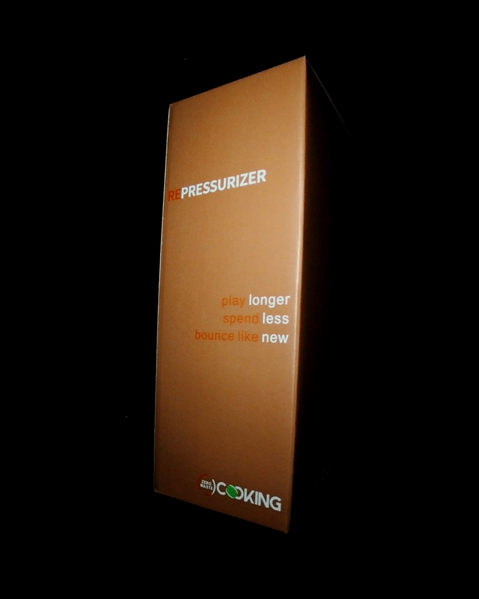
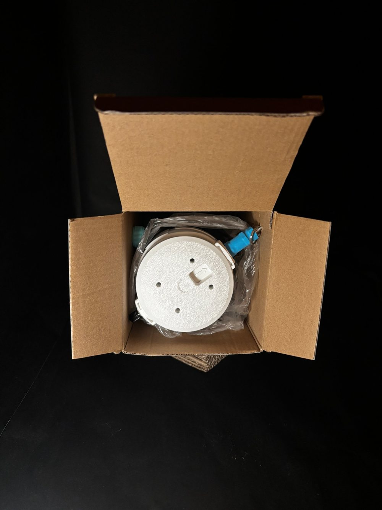

Test data
Measured. Not guessed.
Squeezing a ball with your thumb is subjective. So we dropped balls from a fixed height and measured how high they bounced.
Second bounce after 3 months flat
−23.6 cm
from 45.6 cm down to 22.0 cm
Restored by rePressurizer
+23.1 cm
back up to 45.1 cm
Of fresh-can bounce recovered
99%
second bounce, 45.1 vs 45.6 cm
Features
Simple outside.
Precise inside.
No gauge. No guessing.
Pump until the valve starts to release air. It vents automatically at the set pressure, the same as a freshly opened can of match balls.
30 psi
Works with the pump you already own.
The same valve used on car, motorcycle and most bike tires. Ball pumps, floor pumps, tire inflators, even the air hose at a gas station.
One pull. Pressure out.
Pull the ring on the control valve for a few seconds to release the air safely. When the hissing stops, open the lid. No tools, no sudden burst.

Feel the click. Know it's sealed.
The securing pin only slides in once the lid is fully tightened. It's visual and tactile proof the canister is air-tight, so pressure stays stable for as long as you store your balls.
Design
Clear by design.
A transparent canister lets you watch the balls inside. Up to three balls, one lid, one securing pin. Nothing else to lose.
How it works
Pump. Rest. Play.
Load
Open the lid and put in up to 3 tennis balls. Tighten the lid until the securing pin can be inserted.
Pump
Attach any Schrader-valve pump to the inflation valve. Stop when the pressure control valve starts releasing air, at about 30 psi.
Rest
Keep the canister out of direct sunlight for several days until the balls regain their round shape and bounce.
Tech specs
rePressurizer
3 balls
Capacity
≈30 psi
Preset release pressure
80 psi
Maximum operating pressure
300 × 106 × 108 mm
Dimensions (approx.)
960 g
Weight
Schrader
Inflation valve (US type)


In the box: pressurizer bottle ×1 · pressurizer lid ×1 · securing pin ×1 · multilingual instructions (English, 中文, Español, 日本語). Air pump not included.
Support
Questions? Answered.
The canister won't hold pressure.
- Make sure the lid is tightened all the way.
- Check for air leaks at the pump nozzle connection.
- Confirm the pressure control valve is properly secured.
The bounce isn't fully restored.
- Balls that lost a lot of pressure may need a longer rest to reach balance.
- Make sure the pressure is maintained at 30 psi or higher.
- Severely worn-out balls may not fully recover.
I can't inflate it.
- Check that your air pump is working.
- Make sure the nozzle is correctly aligned with the inflation valve.
- If the problem persists, message us on Instagram @cookingtennis_global.
Do I need a special pump?
No. Any pump with a standard Schrader (US-style) head works: ball pumps, bike floor pumps, tire inflators, or a gas-station air hose. A pump isn't included.
Still have a question? Send us a message on Instagram.
Message us on Instagram@cookingtennis_global

Play longer.
Spend less.
Bounce like new.
Available on Amazon in the US, Canada and Mexico.
Buy on Amazon USSafety. Stop inflating once the pressure control valve starts releasing air; overinflation may damage the pressurizer. Do not exceed the maximum operating pressure (80 psi). Avoid direct sunlight and high temperatures during use and storage. Make sure the lid is fully tightened so the securing pin can be inserted. Keep out of reach of children. Stop using it if you notice cracks or valve malfunctions. The pressure control valve and inflation port are sealed with a patented locking method — do not attempt to disassemble the lid.